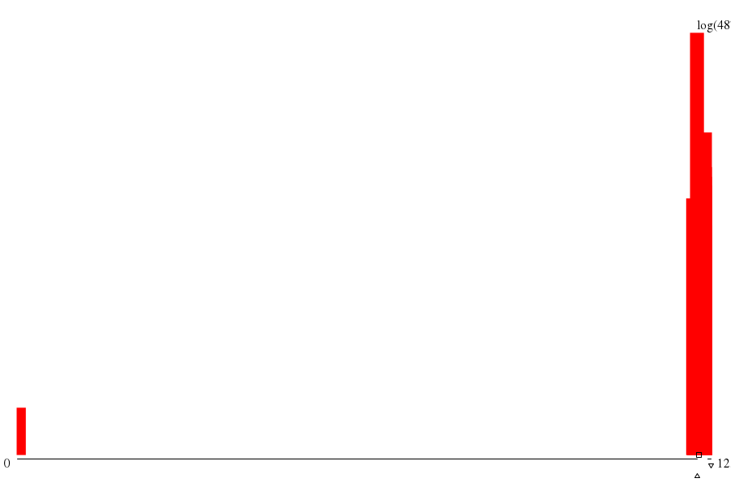

|  | ||
| maxs | mins | |
|
(582.su) 1257 |
(0.summ) 3 |
|
|
(276.su) 1256 |
(1001.s) 3 |
|
|
(303.su) 1256 |
(876.su) 1225 |
|
|
(956.su) 1256 |
(797.su) 1225 |
|
|
(118.su) 1255 |
(770.su) 1225 |
| memory (MB) | mode ▵ | μ ▫ | (μ+σ)/μ | 1st alloc. max value | 1st alloc. max through ▿ | 1st alloc. min waste |
| -- 1.292 xE9 |
-- 1.296 xE9 |
-- 1.045 |
throu: 1.000 waste: 1.60%
alloc: 1.318 xE9 |
throu: 1.000 waste: 1.60%
alloc: 1.318 xE9 |
throu: 1.000 waste: 1.60%
alloc: 1.318 xE9 |